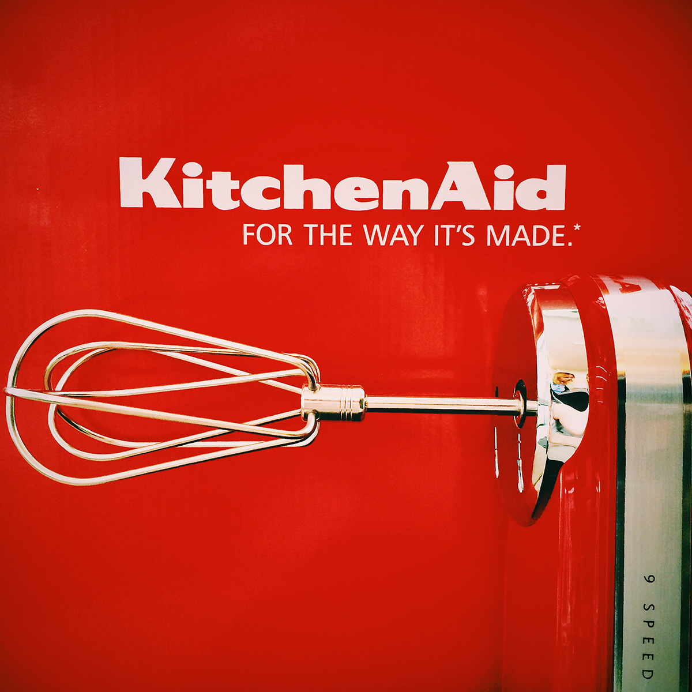

С 10 по 22 июня я разыгрываю в своём инстаграме маленький красный миксер KitchenAid (узнать больше о миксере).
Обязательно указываете аккаунты @KitchenAidBy и @lililoveme, теги #KitchenAid #KitchenAidBy.
В нашем розыгрыше участвуют народы всего мира.
Каждому участнику мы дадим номер. Аккаунты на время участия в розыгрыше должны быть открыты (public), иначе мы не увидим ваш репост.